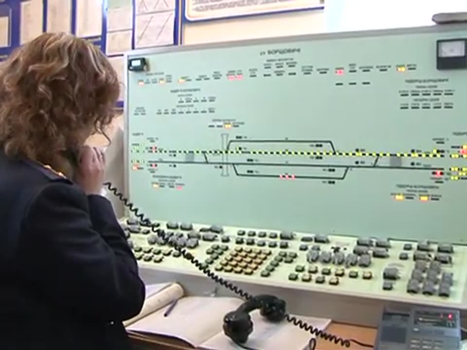
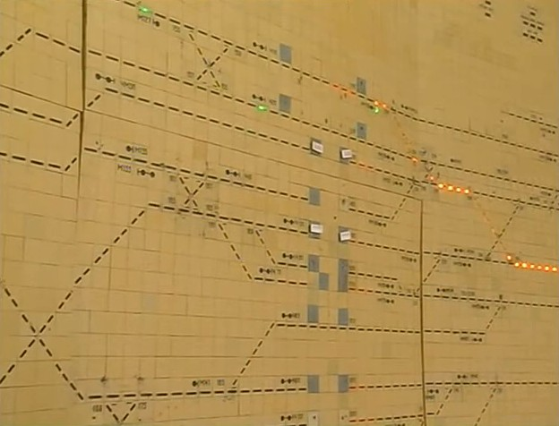

Централізація — комплекс технічних засобів для керування стрілками і сигналами на станціях або дільницях з одного пункту (центру) управління.
До станційних пристроїв СЦБ належать електрична централізація стрілок і сигналів (ЕЦ), диспетчерська централізація (ДЦ), маршрутно-контрольні пристрої та станційне блокування.
Чотири етапи будь-якого маршруту
Незалежно від виду пристроїв приймання, відправлення та пропуск поїздів виконується в такій послідовності:
| № | Етап | Що відбувається |
|---|---|---|
| 1 | Приготування маршруту | Переведення стрілок у потрібне положення; замикання притиснутого вістряка з перевіркою щільності прилягання до рамної рейки; контроль фактичного положення |
| 2 | Контроль установки і вільності | Перевірка положення всіх стрілок маршруту, вільності колій і стрілочних секцій, відсутності зустрічних маршрутів (одночасний рух якими небезпечний) |
| 3 | Відкриття світлофора | Замикання всіх стрілок маршруту (щоб не перевести під поїздом), виключення зустрічних маршрутів, відкриття світлофора на дозволяюче показання |
| 4 | Відмикання маршруту | Закриття світлофора після проходження поїзда; фіксація проходу поїзда по стрілках і їх відмикання для інших маршрутів |
Що забезпечує ЕЦ релейного типу
- Керування стрілками й сигналами та контроль їх стану з пульта.
- Схемні взаємозалежності між стрілками й сигналами (на електромагнітних реле).
- Не допускає: приймання поїзда на зайняту колію; переведення стрілки під поїздом; переведення стрілки, замкненої в маршруті.
- Безперервний контроль положення стрілок і зайнятості колій та стрілок на табло.
Вільність колій і стрілок контролюють рейкові кола. Стрілочний електропривод постійно контролює положення стрілки, неприлягання вістряків і розріз стрілки — переведення стрілки колесами рухомого складу, що рухається по невстановленому маршруту пошерсного переводу.
Прилади управління

- Пульт-табло — на невеликих станціях. На табло умовно зображено схему станції з лампочками чи світловими смугами колій і стрілок, світлофори з контрольними лампами, покажчики. Кнопками та рукоятками переводять стрілки, готують і скасовують маршрути, відкривають світлофори.
- Пульт-маніпулятор з виносним табло — на станціях з кількістю стрілок понад 50.
- Мікропроцесорна централізація (МПЦ) — усі операції виконуються з комп'ютера (АРМ ДСП).
Положення стрілки на табло: зелена лампочка — плюсове (нормальне) положення, жовта — мінусове (переведене).
Табло великої станції
На великій станції, наприклад Харків-Пасажирський, черговий по станції з поста ЕЦ керує стрілками, світлофорами й рухом поїздів за допомогою пульта-табло. На табло видно, як поїзди та одиночні локомотиви переміщуються по станції.

- Жовта смуга показує ділянку, приготовану для пропуску поїзда: усі стрілки маршруту переведені в потрібне положення, а світлофор відкритий на дозволяюче показання.
- Червона смуга показує ділянку, на якій зараз перебуває поїзд.
- Зайнятість ділянки визначають рейкові кола: електричне коло спрацьовує, коли колеса поїзда чи локомотива заходять на ділянку колії.
Наприклад, щоб відправити поїзд з 2-ї колії станції Харків-Пасажирський, ДСП задає маршрут від вихідного світлофора Ч2П. На табло засвічується смуга маршруту, стрілки переводяться, і вихідний світлофор Ч2П відкривається.
Способи встановлення маршрутів
Роздільне (індивідуальне) керування
На малих станціях кожну стрілку переводять окремо двома кнопками: «+» (нормальне положення) і «−» (переведене).
Маршрутне керування
На великих станціях маршрут набирають кнопками початку і кінця. Стрілочні рукоятки мають три положення: «+», «−» і нейтральне. У нейтральному стрілка переводиться автоматично в набраному маршруті; у положенні «+» чи «−» вона на ручному керуванні й у набір не входить.
Кнопки на пульті
- Поїзні кнопки: початкові з зеленою головкою (вхідні, маршрутні, вихідні світлофори) та кінцеві з червоною головкою (колії без вихідних світлофорів).
- Маневрові кнопки: з білою головкою, усі маневрові світлофори та вихідні/маршрутні, суміщені з маневровими.
Скасування маршруту
Якщо маршрут набрано помилково або його треба скасувати, використовують кнопки відміни. Схема витримує час до відмикання маршруту, щоб поїзд, який уже наближається, встиг зупинитися:
| Що скасовується | Типова витримка часу |
|---|---|
| Поїзний маршрут | 6 хв |
| Маневровий маршрут | 1,5 хв |
| Секція маршруту, набраного з кількох секцій | 6 с |
Тренажер: пульт проміжної станції
Спробуйте приготувати маршрут приймання непарного поїзда, як це робить ДСП. Порядок: вибрати колію → перевірити, що вона вільна → стрілки переводяться і замикаються → відкрити вхідний світлофор Н. Зверніть увагу, яке показання дає світлофор при прийманні на головну і на бічну колію.